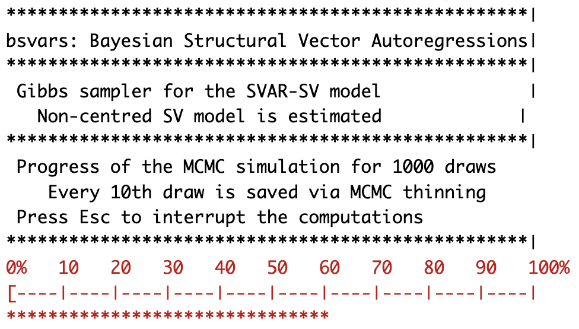

Bayesian Structural Vector Autoregressions
\[ \]
Structural Vector Autoregressions
Identification of Structural VARs
Dynamic Causal Effects
Bayesian Estimation
Monetary Policy Analysis Using the bsvars Package

Materials
\[ \]
Lecture Slides as a Website
Quarto document template for your own Australian monetary policy analysis
GitHub repo to reproduce the slides and results
Tasks
Structural Vector Autoregressions
Structural Vector Autoregressions
- go-to models for the analysis of policy effects
- facilitate the analysis of dynamic causal effects of a well-isolated cause
- extensively used for: monetary and fiscal policy, financial markets, …
- relatively simple to work with data and provide empirical evidence on the propagation of shocks through economies and markets
- provide data-driven stylised facts to be incorporated in theoretical model
- require identification of the cause of the dynamic effects
- extendible: featuring many variations in specification
- non-normality
- heteroskedasticity
- time-varying parameters
- Bayesian
- Proposed by Sims (1980)
Structural Vector Autoregressions
The model.
\[\begin{align} \text{VAR equation: }&& y_t &= \mathbf{A}_1 y_{t-1} + \dots + \mathbf{A}_p y_{t-p} + \boldsymbol\mu_0 + \epsilon_t\\[1ex] \text{structural equation: }&& \mathbf{B}\epsilon_t &= u_t\\[1ex] \text{structural shocks: }&& u_t |Y_{t-1} &\sim N_N\left(\mathbf{0}_N,\mathbf{I}_N\right) \end{align}\]
Notation.
\(\mathbf{B}\) - \(N\times N\) structural matrix of contemporaneous relationships
\(u_t\) - \(N\)-vector of structural shocks at time \(t\)
Isolating these shocks allows us to identify dynamic effects of uncorrelated shocks on variables \(y_t\)
\(\epsilon_t\) - \(N\)-vector with VAR errors at time \(t\)
the rest as in Lecture 7: Bayesian VARs
Structural Vector Autoregressions
The VAR errors.
\[\begin{align} &&&\\ \text{structural equation: }&& \epsilon_t &= \mathbf{B}^{-1}u_t\\[1ex] \text{structural shocks: }&& \epsilon_t |Y_{t-1} &\sim N_N\left(\mathbf{0}_N,\Sigma\right)\\[1ex] \text{covariance: }&& \mathbf\Sigma &= \mathbf{B}^{-1}\mathbf{B}^{-1\prime} = \Theta_0\Theta_0' \end{align}\]
Notation.
- \(\mathbf\Sigma\) - \(N\times N\) covariance matrix of VAR errors
- \(\Theta_0 = \mathbf{B}^{-1}\) - \(N\times N\) matrix of contemporaneous effects
Structural Vector Autoregressions
Plug the VAR equation into the structural equation to obtain:
\[\begin{align} \mathbf{B}y_t &= \mathbf{B}\mathbf{A}_1 y_{t-1} + \dots + \mathbf{B}\mathbf{A}_p y_{t-p} + \mathbf{B}\boldsymbol\mu_0 + u_t\\[1ex] &\\ \end{align}\]
Contemporaneous relationships.
Let \(N=2\)
\[\begin{align} \mathbf{B}y_t &= \begin{bmatrix}B_{11}&B_{12}\\B_{21}&B_{22}\end{bmatrix}\begin{bmatrix}y_{1t}\\y_{2t}\end{bmatrix} \end{align}\]
Structural Vector Autoregressions
Plug the structural equation for \(\epsilon_t\) into the VAR equation to obtain:
\[\begin{align} y_t &= \mathbf{A}_1 y_{t-1} + \dots + \mathbf{A}_p y_{t-p} + \boldsymbol\mu_0 + \mathbf{B}^{-1}u_t\\[1ex] y_t &= \mathbf{A}_1 y_{t-1} + \dots + \mathbf{A}_p y_{t-p} + \boldsymbol\mu_0 + \mathbf{\Theta}_0 u_t \end{align}\]
Contemporaneous effects.
Let \(N=2\)
\[\begin{align} \begin{bmatrix}y_{1t}\\y_{2t}\end{bmatrix} &= \dots + \begin{bmatrix}\Theta_{11}&\Theta_{12}\\\Theta_{21}&\Theta_{22}\end{bmatrix}\begin{bmatrix}u_{1t}\\ u_{2t}\end{bmatrix} \end{align}\]
Task.
What is the contemporaneous effect of the first shock on the second variable?
Identification of Structural VARs
Identification of SVARs (Simplified)
Covariance and structural relationships.
\[\begin{align} &\\ \mathbf\Sigma &= \mathbf{B}^{-1}\mathbf{B}^{-1\prime}\\[1ex] \end{align}\]
- \(\mathbf\Sigma\) can be estimated using data easily
- The relationship presents a system of equations to be solved for \(\mathbf{B}\)
- \(\mathbf\Sigma\) is a symmetric \(N\times N\) matrix
- \(\mathbf\Sigma\) has \(N(N+1)/2\) unique elements given equations
- \(\mathbf{B}\) is an \(N\times N\) matrix with \(N^2\) unique elements to estimate
- We cannot estimate all elements of \(\mathbf{B}\) using \(N(N+1)/2\) equations
- \(\mathbf{B}\) is
not identified
Identification of SVARs (Simplified)
Covariance and structural relationships.
\[\begin{align} &\\ \mathbf\Sigma &= \mathbf{B}^{-1}\mathbf{B}^{-1\prime}\\[1ex] \end{align}\]
Identification.
- Only \(N(N+1)/2\) elements in \(\mathbf{B}\) can be estimated
- Impose \(N(N-1)/2\) restrictions on \(\mathbf{B}\) to solve the equation
- This identifies the rows of \(\mathbf{B}\) (and the columns of \(\mathbf\Theta_0\)) up to a sign
- Change the sign of any number of \(\mathbf{B}\) rows and \(\mathbf\Sigma\) will not change
- Often \(\mathbf{B}\) is made lower-triangular
Identification of SVARs (Simplified)
Covariance and structural relationships.
Let \(N=2\)
\[\begin{align} \begin{bmatrix}\sigma_1^2&\sigma_{12}\\ \sigma_{12}&\sigma_2^2\end{bmatrix} &\qquad \begin{bmatrix}B_{11}&B_{12}\\ B_{21}&B_{22}\end{bmatrix}\\[1ex] \end{align}\]
- 3 unique elements in \(\mathbf\Sigma\) - 3 equations in the system
- 4 elements in \(\mathbf{B}\) cannot be estimated
Identification.
\[\begin{align} \begin{bmatrix}\sigma_1^2&\sigma_{12}\\ \sigma_{12}&\sigma_2^2\end{bmatrix} &\qquad \begin{bmatrix}B_{11}& 0\\ B_{21}&B_{22}\end{bmatrix}\\[1ex] \end{align}\]
- 3 equations identify 3 elements in \(\mathbf{B}\)
Identification of Monetary Policy Shock
Consider a system of four variables:
\[\begin{align} y_t = \begin{bmatrix} \Delta rgdp_t & \pi_t & cr_t & \Delta rtwi_t \end{bmatrix}' \end{align}\]
- \(\Delta rgdp_t\) - real Gross Domestic Product growth
- \(\pi_t\) - Consumer Price Index inflation
- \(cr_t\) - Cash Rate Target - Australian nominal interest rate
- \(\Delta rtwi_t\) - real Trade-Weighted Index rate of return (exchange rate)
Identified system.
A lower-triangular matrix identifies:
- contemporaneous relationships \(\mathbf{B}\)
- contemporaneous effects \(\mathbf\Theta_0\)
- structural shocks \(u_t\)
Identification of Monetary Policy Shock
Identified system.
\[\begin{align} \begin{bmatrix} B_{11}&0&0&0\\ B_{21}&B_{22}&0&0\\ B_{31}&B_{32}&B_{33}&0\\ B_{41}&B_{42}&B_{43}&B_{44} \end{bmatrix} \begin{bmatrix} \Delta rgdp_t \\ \pi_t \\ cr_t \\ \Delta rtwi_t \end{bmatrix} &= \dots + \begin{bmatrix} u_t^{ad} \\ u_t^{as} \\ u_t^{mps} \\ u_t^{ex} \end{bmatrix} \end{align}\]
Identified shocks.
\(u_t^{ad}\) - aggregate demand shock is exogenous to the rest of the system
\(u_t^{as}\) - aggregate supply shock
\(u_t^{mps}\) - monetary policy shock identified via Taylor’s Rule
\(u_t^{ex}\) - currency shock
Identification of Monetary Policy Shock
Identified system.
\[\begin{align} \begin{bmatrix} B_{11}&0&0&0\\ B_{21}&B_{22}&0&0\\ B_{31}&B_{32}&B_{33}&0\\ B_{41}&B_{42}&B_{43}&B_{44} \end{bmatrix} \begin{bmatrix} \Delta rgdp_t \\ \pi_t \\ cr_t \\ \Delta rtwi_t \end{bmatrix} &= \dots + \begin{bmatrix} u_t^{ad} \\ u_t^{as} \\ u_t^{mps} \\ u_t^{ex} \end{bmatrix} \end{align}\]
Tasks.
- Write out the third equation for the cash rate.
- Let \(B_{33}>0\). What values of \(B_{31}\) and \(B_{32}\) does theory imply?
Identification of Monetary Policy Shock
Identified system.
\[\begin{align} \begin{bmatrix} B_{11}&0&0&0\\ B_{21}&B_{22}&0&0\\ B_{31}&B_{32}&B_{33}&0\\ B_{41}&B_{42}&B_{43}&B_{44} \end{bmatrix} \begin{bmatrix} \Delta rgdp_t \\ \pi_t \\ cr_t \\ \Delta rtwi_t \end{bmatrix} &= \dots + \begin{bmatrix} u_t^{ad} \\ u_t^{as} \\ u_t^{mps} \\ u_t^{ex} \end{bmatrix} \end{align}\]
Monetary policy shock.
- is uncorrelated with any other shock
- consists of the unanticipated (unpredictable) part of the monetary policy instrument, interest rate
- In this model, the systematic part of the monetary policy consists of:
- contemporaneous relationships with GDP and inflation
- lagged relationships with all variables
Identification via Heteroskedasticity
Suppose that:
- there are two covariances, \(\mathbf\Sigma_1\) and \(\mathbf\Sigma_2\), associated with the sample
- matrix \(\mathbf{B}\) does not change over time
- structural shocks are heteroskedastic with covariances \(\text{diag}\left(\boldsymbol\sigma_1^2\right)\) and \(\text{diag}\left(\boldsymbol\sigma_2^2\right)\)
\[\begin{align} \mathbf\Sigma_1 &= \mathbf{B}^{-1}\text{diag}\left(\boldsymbol\sigma_1^2\right)\mathbf{B}^{-1\prime}\\[1ex] \mathbf\Sigma_2 &= \mathbf{B}^{-1}\text{diag}\left(\boldsymbol\sigma_2^2\right)\mathbf{B}^{-1\prime} \end{align}\]
Identification.
- \(\mathbf\Sigma_1\) and \(\mathbf\Sigma_2\) contain \(N^2+N\) unique elements
- All \(N^2\) elements of \(\mathbf{B}\) can be estimated
- Both \(N\)-vectors \(\boldsymbol\sigma_1^2\) and \(\boldsymbol\sigma_2^2\) can be estimated due to additional restriction: \(E\left[\text{diag}\left(\boldsymbol\sigma_i^2\right)\right] = \mathbf{I}_N\)
Identification via Heteroskedasticity
The setup can be generalised to conditional heteroskedasticity of structural shocks
\[\begin{align} u_t |Y_{t-1} &\sim N_N\left(\mathbf{0}_N, \text{diag}\left(\boldsymbol\sigma_t^2\right)\right)\\[1ex] \mathbf\Sigma_t &= \mathbf{B}^{-1}\text{diag}\left(\boldsymbol\sigma_t^2\right)\mathbf{B}^{-1\prime}\\[1ex] E\left[\text{diag}\left(\boldsymbol\sigma_t^2\right)\right] &= \mathbf{I}_N \end{align}\]
Identification.
- Matrix \(\mathbf{B}\) is identified up to its rows’ sign change and equations’ reordering
- Structural shocks’ conditional variances \(\boldsymbol\sigma_t^2\) can be estimated
Heteroskedasticity Modeling.
Choose any (conditional) variance model for \(\boldsymbol\sigma_t^2\) that fits the data well.
Dynamic Causal Effects
Impulse response functions
Definition.
Impulse response functions to orthogonal shocks computed for an empirically relevant SVAR model are considered the
\[\begin{align*} \frac{\partial y_{n.t+i}}{\partial u_{j.t}}&=\theta_{nj.i} \end{align*}\]
\(\theta_{nj.i}\) - response of \(n\)th variable to \(j\)th shock \(i\) periods after shock’s occurrence
for \(i=0,1,\dots,h\) and \(n,j=1,\dots,N\)
Impulse response functions
Definition.
Impulse response functions to orthogonal shocks computed for an empirically relevant SVAR model are considered the
\[\begin{align*} \frac{\partial y_{t+i}}{\partial u_t}&=\underset{N\times N}{\mathbf\Theta_i} \end{align*}\]
\(\mathbf\Theta_i\) - responses of all of the variables to all of the shocks \(i\) periods after shocks’ occurrence
for \(i=0,1,\dots,h\) and \(n,j=1,\dots,N\)
Impulse response functions
At finite horizon.
Define matrices
\[ \underset{(pN\times pN)}{\mathbb{A}} = \begin{bmatrix}\mathbf{A}_1 & \mathbf{A}_2 &\dots& \mathbf{A}_p\\ &\mathbf{I}_{N(p-1)}&&\mathbf{0}_{N(p-1)\times N} \end{bmatrix}\quad\text{and}\quad \underset{(N\times pN)}{\mathbf{J}} = \begin{bmatrix} \mathbf{I}_{N} & \mathbf{0}_{N\times N(p-1)} \end{bmatrix} \] Impulse response at horizon \(i=0,1,\dots,h\) are equal to:
\[\begin{align} \mathbf\Theta_i &= \mathbf{J}\mathbb{A}^i\mathbf{J}'\mathbf{B}^{-1} \end{align}\] where \(\mathbb{A}^0=\mathbf{I}_N\), \(\mathbb{A}^1=\mathbb{A}\), \(\mathbb{A}^2=\mathbb{A}\mathbb{A}\), …
At infinite horizon.
Inform about the value of the effect in the long run.
\[\begin{align} \mathbf\Theta_{\infty} &= \left( \mathbf{I}_N - \mathbf{A}_1 - \dots - \mathbf{A}_p \right)^{-1}\mathbf{B}^{-1} \end{align}\]
Impulse response functions
Bayesian Estimation.
Step 1. Estimate the model
Obtain a sample from the posterior distribution \[\left\{ \mathbf{A}^{(s)},\mathbf{B}^{(s)} \right\}_{s=1}^{S}\]
Step 2. Compute impulse responses
For each of the \(S\) draws, compute \(\mathbf\Theta_i^{(s)}\) as a function of \(\mathbf{A}^{(s)}\) and \(\mathbf{B}^{(s)}\) and return \[\left\{\mathbf\Theta_i^{(s)}\right\}_{s=1}^{S}\] as a sample drew from the posterior distribution of \(\Theta_i\) given data.
Bayesian Estimation
Bayesian Estimation
\(\left.\right.\)
Gibbs sampler by Waggoner & Zha (2003)
facilitates estimation of Bayesian SVARs for
- lower-triangular and non-recursive identification patterns of exclusion restrictions
- over-identifying (more than \(N(N − 1)/2)\) exclusion restrictions
- models identified via heteroskedasticity
\(\left.\right.\)
Further extensions include SVARs
- identified through non-normal residuals
- identified by zero and sign restrictions
- identified using instrumental variables (Proxy SVARs)
Bayesian Estimation
Exclusion restrictions on the rows of \(\mathbf{B}\)
\[ \underset{(1\times N)}{\mathbf{B}_{[n\cdot]}} = \underset{(1\times r_n)}{\mathbf{b}_n} \underset{(r_n\times N)}{V_n} \qquad\text{such that}\qquad \mathbf{B} = \begin{bmatrix} \mathbf{b}_1V_1\\ \vdots \\ \mathbf{b}_NV_N \end{bmatrix} \]
- \(\mathbf{b}_n\) - a \(1\times r_n\) vector of unrestricted elements of \(n\) row of \(\mathbf{B}\)
- \(V_n\) - an \(r_n\times N\) fixed matrix of ones and zeros
Example.
\[\mathbf{b}_n = \begin{bmatrix} b_1 & b_2\end{bmatrix}\quad V_n = \begin{bmatrix} 1&0&0\\0&0&1\end{bmatrix} \quad\rightarrow\quad \mathbf{B}_{[n\cdot]} = \begin{bmatrix} b_1&0 & b_2\end{bmatrix} \]
Bayesian Estimation
The \(n\)th Structural Equation.
\[\begin{align*} \mathbf{b}_nV_n\epsilon_t &= u_{n.t}\\ u_{n.t} &\sim N(0,1) \end{align*}\]
Matrix Notation.
\[\begin{align*} E V_n' \mathbf{b}_n' &= U_n\\ U_n &\sim N_T\left(\mathbf{0}_T,I_T\right)\\[2ex] \underset{(T\times1)}{U_n} &= \begin{bmatrix} u_{n.1} & \dots & u_{n.T} \end{bmatrix}'\\ \underset{(T\times N)}{E} &\text{ - defined as before} \end{align*}\]
Bayesian Estimation
Likelihood function.
\[\begin{align*} L(\mathbf{A},\mathbf{B}|Y,X) &\propto |\text{det}\left( \mathbf{B} \right)|^{T}\exp\left\{ -\frac{1}{2}\sum_{n=1}^N \mathbf{b}_nV_nE'EV_n'\mathbf{b}_n' \right\}\\[1ex] E &= Y - X\mathbf{A} \end{align*}\]
Hierarchical prior for \(\mathbf{B}\)
\[\begin{align*} \mathbf{b}_n | \gamma_B &\sim N_{r_n}\left(\mathbf{0}_{r_n}, \gamma_B V_n\underline{S}^{-1}V_n'\right)\\[1ex] \gamma_B &\sim IG2(\underline{s},\underline{\nu}) \end{align*}\]
- \(\underline{S}\) - \(N\times N\) prior scale matrix
- \(\underline{s}\) and \(\underline{\nu}\) positive scalars of scale and shape
Bayesian Estimation
Kernel of the full conditional posterior for \(\mathbf{B}\)
\[\begin{align*} p(\mathbf{B}|Y,X,\mathbf{A}, \gamma_B)&\propto |\text{det}\left( \mathbf{B} \right)|^{T}\exp\left\{ -\frac{1}{2}\sum_{n=1}^N \mathbf{b}_n \overline{S}_n^{-1}\mathbf{b}_n' \right\}\\[1ex] \overline{S}_n^{-1} &= V_n\left[ \gamma_B^{-1}\underline{S}^{-1} + (Y-X\mathbf{A})'(Y-X\mathbf{A}) \right]V_n'\\[2ex] \end{align*}\]
- This is a kernel of a Generalised-Normal distribution
- A feasible Gibbs sampler was proposed by by Waggoner & Zha (2003)
- The Gibbs sampler draws from the full conditional posterior for \(n = 1,\dots,N\): \[ p(\mathbf{b}_n | \mathbf{b}_1,\dots, \mathbf{b}_{n-1},\mathbf{b}_{n+1}, \mathbf{b}_N, \mathbf{A}, \gamma_B, Y, X) \]
Monetary Policy Analysis Using R Package bsvars
bsvars an R Package
bsvars an R Package: Features
- Bayesian estimation of Structural VARs
- identification via:
- exclusion restrictions
- heteroskedasticity
- non-normality
- six heteroskedastic processes
- efficient and fast Gibbs sampler
- excellent computational speed
- frontier econometric techniques
- compiled code using cpp via Rcpp and RcppArmadillo
- data analysis in R
bsvars an R Package: Features
bsvars an R Package: Features
- simple model setup using
specify_*() - flexibility in setting priors, restrictions, etc.
- one function for estimation
estimate() - posterior processing utility functions